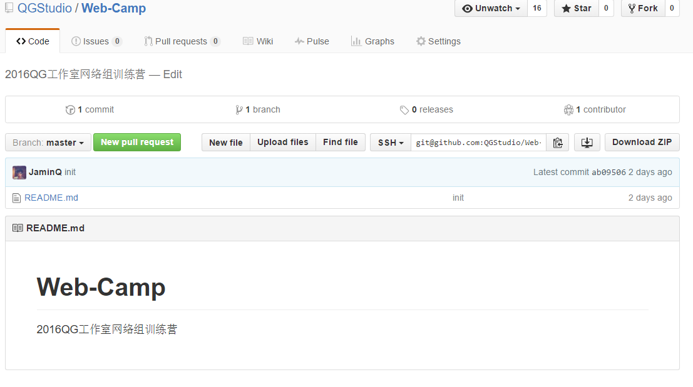

QG训练营网络组第一次组内培训课后补充
Edit
QG训练营网络组第一次组内培训课后补充
关于Git （本地仓库）与 Github （远程仓库）相关联问题
使用SSH协议来传送数据的配置步骤
- Github创建远程仓库

- 本地Git生成SSH密匙
生成密匙说明： windows下如何生成密匙
- 在Github的远程仓库中添加密匙
- 生成的密匙路径一般为
C:\Users\tianx\.ssh\id_rsa.pub
- 将里面的内容复制到
%23%20QG%u8BAD%u7EC3%u8425%u7F51%u7EDC%u7EC4%u7B2C%u4E00%u6B21%u7EC4%u5185%u57F9%u8BAD%u8BFE%u540E%u8865%u5145%0A%0A%23%23%20Git%0A%0A**%u53C2%u8003%u8D44%u6599**%0A%0A*%20%5BGit%u5165%u95E8%u6559%u7A0B%5D%28https%3A//lvwzhen.gitbooks.io/git-tutorial/content/chapter-1/README.html%29%0A*%20%5BGit%u5B98%u65B9%u6587%u6863%5D%28https%3A//git-scm.com/doc%29%0A*%20%5BGit%u8BE6%u89E3%5D%28http%3A//blog.jobbole.com/25775/%29%0A%0A**%u63A8%u8350%u4E66%u7C4D**%0A%0A%5BGit%u7248%u672C%u63A7%u5236%u7BA1%u7406%5D%28https%3A//www.amazon.cn/Git%25E7%2589%2588%25E6%259C%25AC%25E6%258E%25A7%25E5%2588%25B6%25E7%25AE%25A1%25E7%2590%2586-%25E4%25B9%2594%25E6%2581%25A9%25C2%25B7%25E7%25BD%2597%25E5%258A%259B%25E6%25A0%25BC/dp/B00U42VM7Y/ref%3Dsr_1_1%3Fie%3DUTF8%26qid%3D1460945660%26sr%3D8-1%26keywords%3DGit%29%0A%0A%0A%23%23%20Github%0A%0A**%u53C2%u8003%u8D44%u6599**%0A%0A%5BGIthub%u5165%u95E8%u4E0E%u5B9E%u8DF5%5D%28https%3A//www.amazon.cn/GitHub%25E5%2585%25A5%25E9%2597%25A8%25E4%25B8%258E%25E5%25AE%259E%25E8%25B7%25B5-%25E5%25A4%25A7%25E5%25A1%259A%25E5%25BC%2598%25E8%25AE%25B0/dp/B011LPUB4M/ref%3Dsr_1_3%3Fie%3DUTF8%26qid%3D1460945660%26sr%3D8-3%26keywords%3DGit%29%0A%5BGithub.com%5D%28https%3A//github.com/%29%0A%0A%0A%0A%23%23%23%20%u5173%u4E8EGit%20%uFF08%u672C%u5730%u4ED3%u5E93%uFF09%u4E0E%20Github%20%uFF08%u8FDC%u7A0B%u4ED3%u5E93%uFF09%u76F8%u5173%u8054%u95EE%u9898%0A%0A%0A%u4F7F%u7528SSH%u534F%u8BAE%u6765%u4F20%u9001%u6570%u636E%u7684%u914D%u7F6E%u6B65%u9AA4%0A%0A1.%20Github%u521B%u5EFA%u8FDC%u7A0B%u4ED3%u5E93%0A%0A%21%5BAlt%20text%5D%28./1460945963681.png%29%0A%0A%0A%0A2.%20%u672C%u5730Git%u751F%u6210SSH%u5BC6%u5319%3Cbr/%3E%0A%u751F%u6210%u5BC6%u5319%u8BF4%u660E%uFF1A%20%5Bwindows%u4E0B%u5982%u4F55%u751F%u6210%u5BC6%u5319%5D%28https%3A//help.github.com/articles/generating-a-new-ssh-key-and-adding-it-to-the-ssh-agent/%29%0A%3Cbr/%3E%0A3.%20%u5728Github%u7684%u8FDC%u7A0B%u4ED3%u5E93%u4E2D%u6DFB%u52A0%u5BC6%u5319%20%0A*%20%u751F%u6210%u7684%u5BC6%u5319%u8DEF%u5F84%u4E00%u822C%u4E3A%20%60C%3A%5CUsers%5Ctianx%5C.ssh%5Cid_rsa.pub%60%0A*%20%u5C06%u91CC%u9762%u7684%u5185%u5BB9%u590D%u5236%u5230%0A%21%5BAlt%20text%5D%28./1460946244473.png%29%0A%0A%0A%23%23%20Shadowsocks%u4F7F%u7528%0A%0A%5B%u5B98%u7F51%5D%28https%3A//shadowsocks.com/%29%0A%0A%5B%u514D%u8D39%u8D26%u53F7%u4F53%u9A8C%u7248%5D%28http%3A//www.ishadowsocks.net/%29%0A%0A%0A%0A